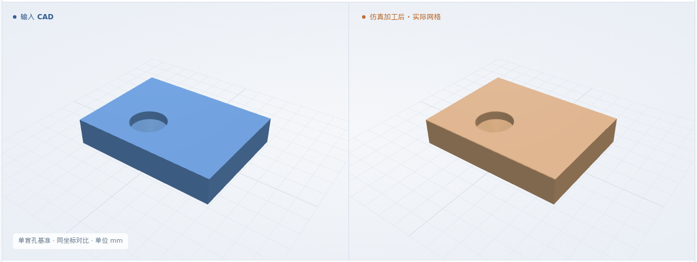
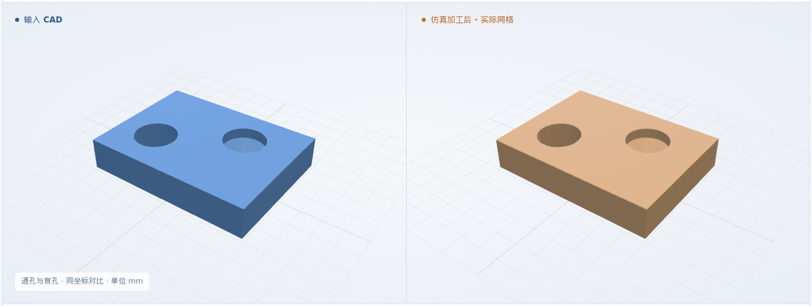
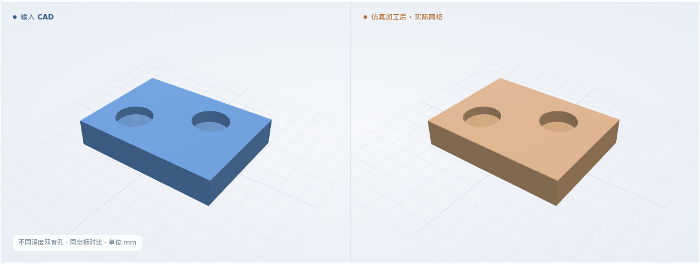
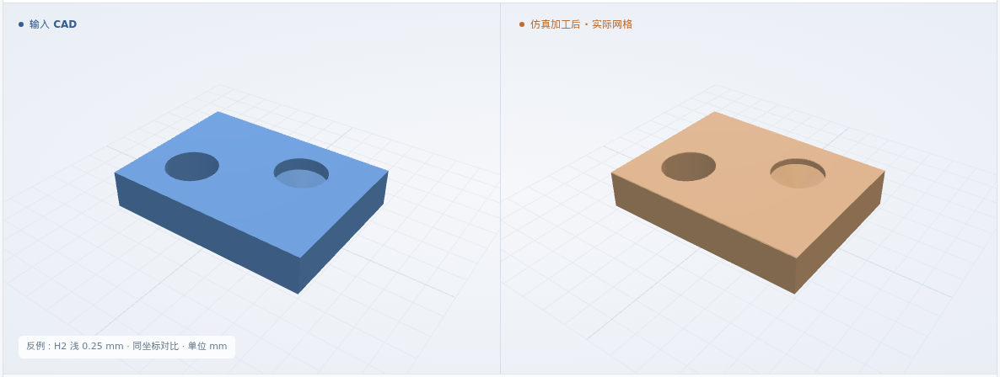
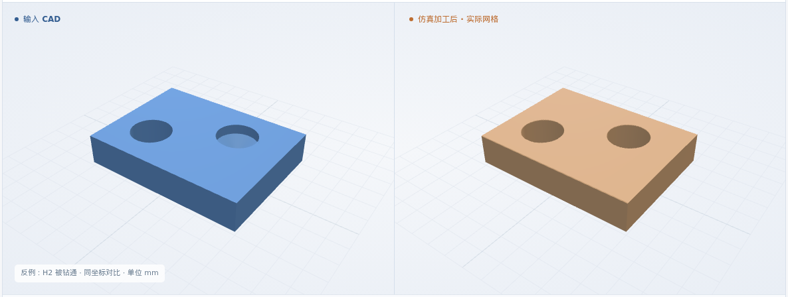

单盲孔基准
8 × 6 × 1.5 mm · H1
最终网格 0.025 mm
体积 IoU99.9759%

本次新增：逐孔区分圆柱深与钻尖深 · 盲孔与通孔混合编程 · 孔底、深度及错误钻通检查
体积 IoU = 原 CAD 与实际剩料的交集 / 并集
8 × 6 × 1.5 mm · H1
最终网格 0.025 mm

8 × 6 × 1.5 mm · H1
最终网格 0.025 mm
8 × 6 × 1.5 mm · H1 → H2
最终网格 0.025 mm

8 × 6 × 1.5 mm · H1 → H2
最终网格 0.025 mm

同一 XYZ / φ2、118° 钻头 / 6061-T6 标签；最终网格均为 0.025 mm。
毛坯 → 钻尖进入 → 形成孔壁与锥底 → 完成
三维回放暂不可用；上方实际图片和形状下载仍可查看。
H1 (3, 2)，圆柱深 0.5 mm；其余用例复用该流程
绑定工步、孔和资源；区分圆柱深与钻尖深。缺深度、刀角冲突或穿底则停止。
准备检查通过 ↗独立读取原 CAD 复核形状；核对每孔最终 NC 的位置、刀具、深度与工序顺序。
16 个执行代码块与方案一致 ↗对同一 NC 真实去料；与原 CAD 比 IoU，再检查孔径、孔位、圆柱深度和剩余孔底。
几何比对与测量 ↗孔径 ±0.1 mm、孔心偏差 ≤0.1 mm、圆柱深 ±0.1 mm；锥底偏差 ≤0.1 mm、底厚 ≥0.1 mm。孔壁 11 个截面、孔底 25 个探测点；2 个网格步长作为数值保护带。通孔仍检查 9 条探测线。
软件条件 ↗ · 完整结果 ↗制造验收依据仍待补齐；粗糙度、真实装夹和材料物理尚未验证。
正常入口均先拒绝错误 NC；专用反例执行后，H1 通过，H2 的浅孔、深孔或误钻通被检出。
H1 正常 · 仅 H2 有意设置错误
最终网格 0.025 mm

H1 正常 · 仅 H2 有意设置错误
最终网格 0.025 mm
H1 正常 · 仅 H2 有意设置错误
最终网格 0.025 mm

四例 IoU、CAD 对比与实际回放，另有四个几何反例。